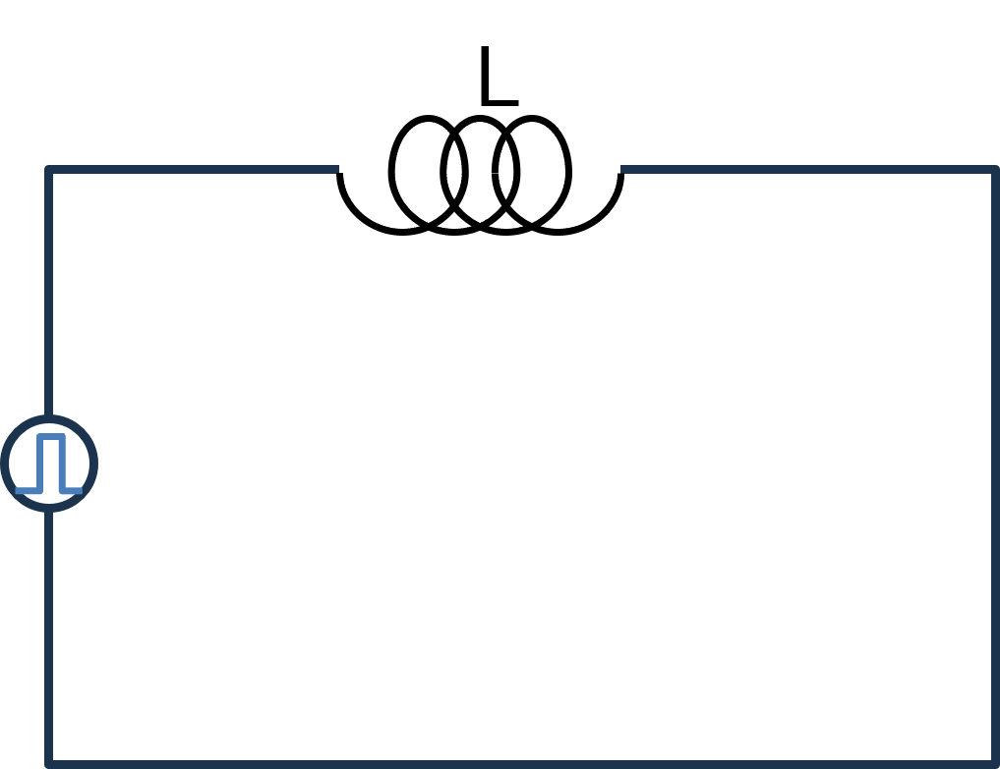
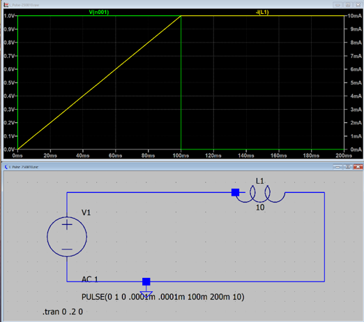

１３－３．ステップ関数（L回路）
このページからは，入力が正弦波ではなくステップ関数の場合の応答を調べていきます．
次は，コイルのみの回路について

入力はステップ関数となるので，
\(\Large V(t) \ : \ V_0 \ ( 0 \leq t \leq t_0) \)
\(\Large \hspace{35 pt} : \ 0 \ (t_0 < t) \)
となります．したがって，
\(\Large V(t) = V_0 \cdot u(t) \)
と書けます．u(t)はステップ関数です．
\(\Large 0 \leq t \leq t_0 \)
\(\Large \displaystyle V(t) = L \frac{d}{dt} I(t) = V_0 \)
となるので，
\(\Large \displaystyle I(t) = \frac{V_0}{L}t + I(0) \)
I(0) = 0，とすると，
\(\Large \displaystyle I(t) = \frac{V_0}{L}t \)
となり，t0の段階では，
\(\Large \displaystyle I(t_0) = \frac{V_0}{L}t_0 \)
\(\Large t_0 < t\)
\(\Large \displaystyle V(t) = L \frac{d}{dt} I(t) = 0 \)
となるので，
\(\Large \displaystyle I(t) = I(t_0) = \frac{V_0}{L}t_0 \)
となり，L回路において，ステップ電圧を入力すると，入力中は一定速度で電流が上昇し，ステップ電圧がなくなると，電流値はそのまま維持されます．
とりあえず，実際にLステップ回路を作ってみてシミュレートしてみました．
C = 1 F → 10 MA

計算では，
条件は，
V0 = 1 V
L = 10 H
t0 = 100 ms
ということで，
\(\Large \displaystyle I(t) = I(t_0) = \frac{V_0}{L}t_0 = \frac{1}{10} \cdot 0.1 = 0.01 = 10 \ mA\)
となり，シミュレーション結果と一致します．
次は，L回路のステップ応答です．